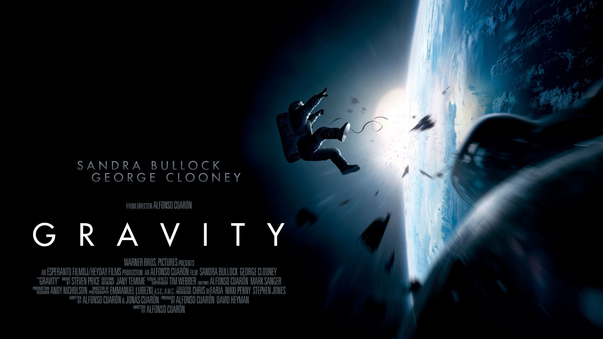
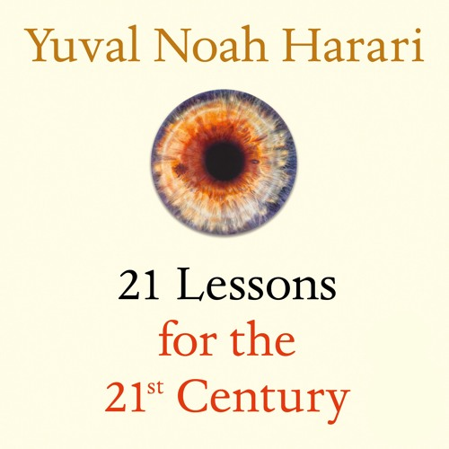
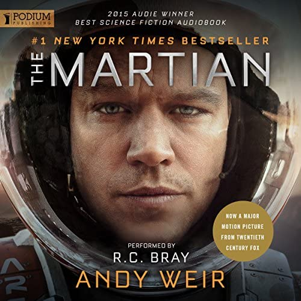
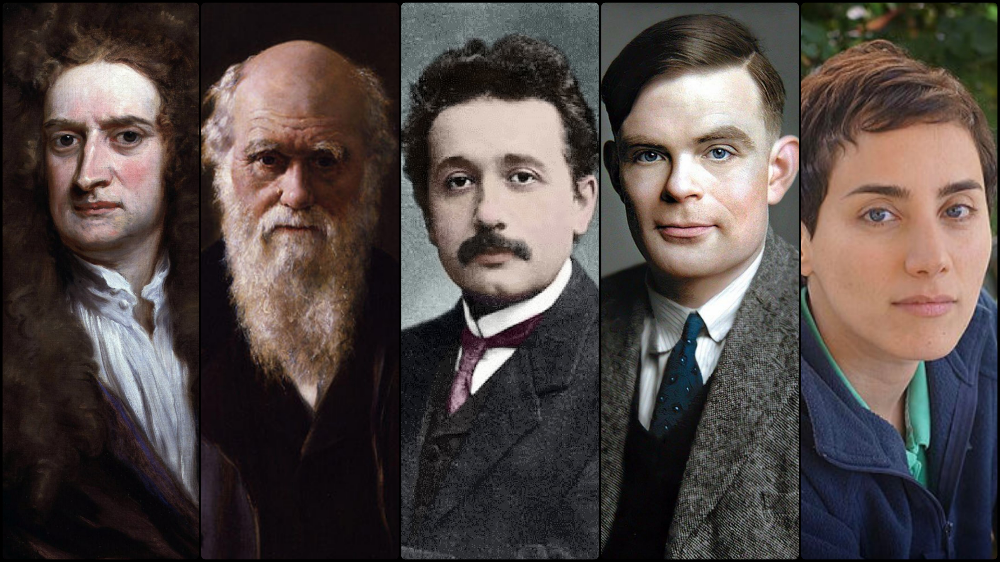

The following includes technologies that feel like developing or
working with, or find interesting.
Disclaimer: This is absolutely NOT a tech-advice. I am
only sharing my personal perspective and for my personal
enthusiastic use-cases. For professional production purposes,
tools must be chosen carefully based on the very nature of
projects rather than personal preferences.
Operating system
GNU/Linux
I like FLOSS (Free/Libre and Open Source Software);
therefore, I like GNU/Linux — as simple as that! For the
matter of distros, my favorite one is (and always has been)
Fedora for bringing cutting-edge technology alongside
simplicity. However, I often tend to use Mint (Cinnamon
desktop) on personal workstations. Though not cutting-edge
as Fedora, it is stable and easy to use. Also in comparison
with Ubuntu, Mint seems to run faster (noticeably on older
hardware).
Programming Language
Python (scripting language)
Regardless of the default programming language, every
programmer needs to know a scripting language to be able to
implement some logic on the go whenever needed (one not
always might be planning to implement an enterprise app).
That being said, my scripting language of choice is Python.
I love its friendly community, the philosophy behind its
design (the
Zen of Python), and indeed the vast number of its useful libraries and
frameworks.
Julia (compiling language)
I find Julia well-designed and satisfying to use. While
being a compiled language, its syntax is similar to common
scripting languages. However, the ecosystem is quite
data-centric at the moment and I wouldn't recommend it for
cases like enterprise web development (Go, with its
great ecosystem and helpful community, is my favorite on
these matters).
Rust (system language)
I do not code in Rust — at least not for now. However, it
appears to me as a mesmerizing language, and especially a
great future replacement for C/C++.
I feel most comfortable using VS Code due to its swiftness,
as well as its helpful extensions. However, I am mostly
inclined to use one specific binary release of it: known as
VSCodium (not everyone might notice, but in contrast to the
MIT-Licensed source code, the official build of this editor
has a proprietary license and also contains tracking
capability).
Git (version control)
There is little need to explain why Git is useful. Instead,
I would have another argument: why should such a useful tool
remain exclusive to software developers? Why shouldn’t there
be a super-simplistic GUI for Git, so that even a basic user
with minimum knowledge about computers could be able to use
it? Into the bargain, why isn’t there a Git GUI for mobile
phones yet? I urge fellow developers to consider this matter
and try to bring Git accessibility for any user who knows
how to turn on a PC.
Docker (virtualization)
Isn’t Docker one of the most hilarious IT innovations of the
2010s?! The fact that you could set up any desired
environment with only a minimum number of keystrokes makes
life a lot easier!
Other
A few other tools that I use for my daily work and enjoy
them:
GitHub Copilot
Grepper
Machine Learning Libraries
Libraries and frameworks occasionally come and go; one
cannot stick to any of them forever. At the moment, I would
rather work with the following:
Tensorflow
I enjoy using TensorFlow for deep learning purposes. It’s
well-documented and I find the codes more readable. In
addition, it gets even more fun when Keras is used as a
wrapper on top of it.
NumPy
Another library that appears charming to me is NumPy. It is
so well-designed and I love to use it as a replacement for
MATLAB when it comes to linear algebra.
It is an unofficial flag, proposed as a representation of
planet Earth – regardless of politicos, organizations, et
cetera. I love it so much that I have put one on my desk.
The symbolic explanation from the
original website
is as follows:
“Centered in the flag, seven rings form a flower – a symbol
of the life on Earth. The rings are linked to each other,
which represents how everything on our planet, directly or
indirectly, are linked. The blue field represents water
which is essential for life – also as the oceans cover most
of our planet's surface. The flower's outer rings form a
circle which could be seen as a symbol of Earth as a planet
and the blue surface could represent the universe.”
Language
Esperanto (EO | EPO)
Naturaj lingvoj estas fundamente kompleksaj (rimarkeble por
nedenaskaj parolantoj). Sekve, instrui ilin necesigas
amasajn financajn kaj tempajn rimedojn. Cetere, ili estas
implikitaj kun kulturoj, kaj disvastigi oni kondukas al
disvastigo de specifa kulturo (kaj endanĝerigi aliajn
kulturojn). Surbaze de tiuj kialoj, mi kredas, ke simplisma
kaj zorge konstruita lingvo – kiel Esperanto – devus esti
peranto inter ĉiuj nacioj, precipe en internaciaj
komunikadoj, akademiaj artikoloj, aŭ uzantmanlibroj. Estas
la lingvo de paco kaj unio Esperanto!
Natural languages are fundamentally complex (noticeably for
non-native speakers). Therefore, teaching them necessitates
massive financial and temporal resources. Moreover, they are
entangled with cultures, and spreading one leads to
spreading a specific culture (and endangering other
cultures). Based on these reasons, I believe that a
simplistic and carefully constructed language – like
Esperanto – should be a mediator among all nations,
especially in international communications, academic papers,
or user manuals. Esperanto is the language of peace and
unity!
Movie
Gravity (2572PE)
Not everyone might consider it the best. Moreover, this
movie indeed contains some technical flaws and mistakes
(e.g. the unrealistic proximity of the orbital parameters of
a random Space Shuttle orbiter, the International Space
Station, and the Tiangong space station). Still, I love
Gravity so much! Every moment of this movie was so
magnetizing to me and made me overladen with emotions.
Chiefly its characterization – the way it represented the
personal emotions of the main character – and its
breathtaking music were enchanting.
“OK. Alright the way I see it, there's only two possible
outcomes. Either I, make it down there in one piece and I
have one hell of a story to tell, or I burn up in the next
ten minutes. Either way whichever way, no harm no foul.
‘Cause either way, it'll be one hell of a ride. I'm ready.”
— Mission Specialist Ryan Stone
Also, strong symbolism could be seen around the plot.
The protagonist appears to lose all meaning in massive
chaos and metaphorically dies. But then gradually she
experiences a reborn and a somewhat stressful regrowth
and finds meaning again.

Book
21 Lessons for the 21st Century (Yuval Noah
Harari)
Momentarily after reading
Sapiens: A Brief History of Humankind and
Homo Deus: A Brief History of Tomorrow (the former
being about the past and the latter being about the future –
both of which I found informative) I started reading this
book. It was like having a personal chat with the author
himself, not about the long-gone past or far-ahead future,
but the present. The experience was delightful.
The Martian (Andy Weir)
I am not a huge fan of novels. Nonetheless, I enjoyed
reading Artemis and The Martian, especially
due to being noticeably realistic and well-grounded.
Moreover, the latter is filled with attention to scientific
and engineering details and that is what I like the most
about it. This is what I would call a true science-fiction!
Other
Some other books that I'd strongly recommend:
The Pattern on the Stone (Danny Hillis)
Blown to Bits: Your Life, Liberty, and Happiness
After the Digital Explosion (Hal Abelson, Ken Ledeen,
Harry Lewis)
Everybody Lies: Big Data, New Data, and What the
Internet Can Tell Us About Who We Really Are (Seth
Stephens-Davidowitz)
Storytelling with Data: A Data Visualization Guide for
Business Professionals (Cole N. Knaflic)
Calling Bullshit: The Art of Skepticism in a Data-Driven
World (Carl T. Bergstrom, Jevin D. West)
Your Deceptive Mind: A Scientific Guide to Critical
Thinking Skills (Steven Novella)
Factfulness: Ten Reasons We're Wrong About the World –
and Why Things Are Better Than You Think (Hans Rosling,
Anna Rosling Rönnlund, Ola Rosling)
Why Nations Fail: The Origins of Power, Prosperity, and Poverty (Daron Acemoglu, James A. Robinson)
Guns, Germs, and Steel (Jared Diamond)
Upheaval: How Nations Cope with Crisis and Change (Jared Diamond)
Sapiens: A Brief History of Humankind (Yuval Noah Harari)
Homo Deus: A Brief History of Tomorrow (Yuval Noah Harari)


Vehicle
ISS | МКС
The International Space Station is my favorite vehicle. This
magnificent scientific lab is the most complex and expensive
artificial object and was built and developed through the
international cooperation of various countries from almost
every continent. It represents the power of science,
engineering, technology, economy, collaboration, and peace.
Международная Космическая Станция мой любимый аппарат. Эта
великолепная научная лаборатория — самый сложный и дорогой
искусственный объект и была построена и развивалась
благодаря международному сотрудничеству различных стран
почти со всех континентов. Она олицетворяет мощь науки,
инженерии, технологий, экономики, сотрудничества и мира.
ISS027-E-036673 | PE 2570.03.02 | ISS & Endeavour |
From Soyuz TMA-20 (undocking - Exp.27)
ISS027-E-036673 | ПИ 2570.03.02 | МКС и Индевор
| С Союз ТМА-20 (расстыковка - МКС.27)
Animal
Cat (Felis Catus)
Stardenburdenhardenbart! 🐈
People
Especially in terms of science, I don’t truly believe in
following authorities (but rather methodologies).
Nevertheless, here are some people who inspire me:
Alan Turing
This colleague of mine was a genius and I am so proud to be
a small part of what he has established! Turing was
basically prospecting decades ahead of his time. In one of
his renowned papers (Turing, 1950), he dedicated a whole chapter to “learning machines”,
arguing that instead of trying to produce a program to
imitate an adult mind, why not simulate a child’s –
uneducated but capable of learning? That is the very concept
of the machine learning we recognize today!
Isaac Newton
Although most recognize him for developing classical
mechanics, I highly admire Newton due to his philosophical
innovations. He essentially revolutionized mankind’s
perspective on natural philosophy and could indeed be
considered a founder of modern science.
Charles Darwin
Even though the natural-selection-based theory of evolution
was still incomplete until the era of genetics, I celebrate
Darwin for restructuring our ideas about ourselves, our
surroundings, and our stance in the universe.
Albert Einstein
I daresay the magnificent general theory of relativity shall
be regarded as an absolutely perfect example of a scientific
theory. And the fact that it was mostly developed by only
one individual is astonishing!
Maryam Mirzakhani
She, principally, could be mentioned as the Leibniz of the
21stCE (26stPE) century! Not unlike
Leibniz (as well as others like Newton) making significant
contributions to calculus, Mirzakhani’s studies on Riemann
surfaces were marvelous.

From left: Newton, Darwin, Einstein, Turing,
Mirzakhani